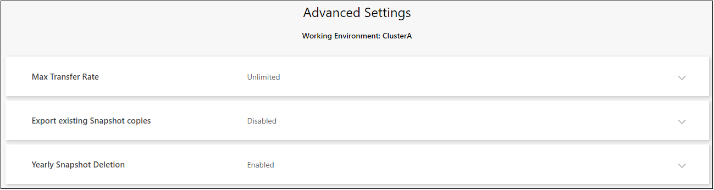
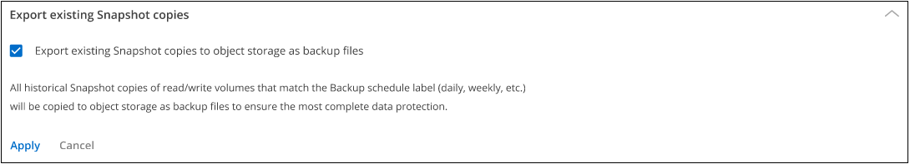
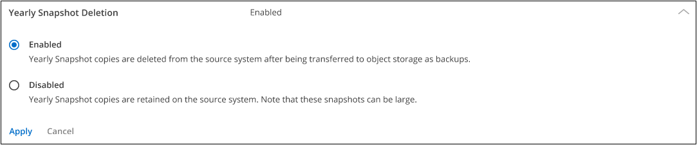

릴리스 정보
릴리스 정보
클러스터 레벨 백업 설정을 관리합니다
 변경 제안
변경 제안
각 ONTAP 시스템에 대해 BlueXP 백업 및 복구를 활성화할 때 설정하는 여러 클러스터 레벨 백업 설정을 변경할 수 있습니다. "기본" 백업 설정으로 적용되는 일부 설정을 수정할 수도 있습니다. 여기에는 오브젝트 스토리지에 대한 백업 전송 속도, 기간별 스냅샷 복사본을 백업 파일로 내보낼지 여부 등이 포함됩니다.

|
이러한 설정은 객체 스토리지로의 백업에만 사용할 수 있습니다. 이러한 설정은 스냅샷 또는 복제 설정에 영향을 주지 않습니다. 스냅샷 및 복제에 대한 유사한 클러스터 수준 복제 설정이 나중에 추가됩니다. |
클러스터 레벨 백업 설정은 Advanced Settings 페이지에서 사용할 수 있습니다.
변경할 수 있는 전체 백업 설정은 다음과 같습니다.
-
백업을 객체 저장소에 업로드하기 위해 할당된 네트워크 대역폭을 변경합니다
-
이후 볼륨에 대한 초기 기본 백업 파일에 기간별 스냅샷 복사본이 포함되는지 여부를 변경합니다
-
소스 시스템에서 "연간" 스냅샷을 제거할지 여부를 변경합니다
클러스터 레벨 백업 설정을 봅니다
각 작업 환경에 대한 클러스터 레벨 백업 설정을 볼 수 있습니다.
-
BlueXP 메뉴에서 * 보호 > 백업 및 복구 * 를 선택합니다.
-
볼륨 * 탭에서 * 백업 설정 * 을 선택합니다.

-
백업 설정 페이지에서 _ 을(를) 클릭합니다
 작업 환경의 경우 * 고급 설정 * 을 선택합니다.
작업 환경의 경우 * 고급 설정 * 을 선택합니다.
고급 설정 _ 페이지에는 해당 작업 환경의 현재 설정이 표시됩니다.

변경해야 하는 경우 옵션을 확장하고 변경합니다. 변경 후 모든 백업 작업에는 새 값이 사용됩니다.
일부 옵션은 소스 클러스터의 ONTAP 버전과 백업이 상주하는 클라우드 공급자 대상을 기반으로 사용할 수 없습니다.
백업을 객체 저장소에 업로드하는 데 사용할 수 있는 네트워크 대역폭을 변경합니다
작업 환경에 대해 BlueXP 백업 및 복구를 활성화하면 기본적으로 ONTAP는 무제한 대역폭을 사용하여 작업 환경의 볼륨에서 객체 스토리지로 백업 데이터를 전송할 수 있습니다. 백업 트래픽이 일반 사용자 워크로드에 영향을 주는 경우 전송 중에 사용되는 네트워크 대역폭의 양을 조절할 수 있습니다. 최대 전송 속도로 1에서 1,000 Mbps 사이의 값을 선택할 수 있습니다.

제한된 * 라디오 버튼을 선택하고 사용할 수 있는 최대 대역폭을 입력하거나 * 무제한 * 을 선택하여 제한이 없음을 나타냅니다.
이 설정은 작업 환경의 볼륨에 대해 구성할 수 있는 다른 복제 관계에 할당된 대역폭에 영향을 주지 않습니다.
기간별 스냅샷 복사본을 백업 파일로 내보낼 것인지 여부를 변경합니다
이 작업 환경(예: 매일, 매주 등)에서 사용 중인 백업 일정 레이블과 일치하는 볼륨에 대한 로컬 스냅샷 복사본이 있는 경우 이러한 기존 스냅샷을 백업 파일로 오브젝트 스토리지로 내보낼 수 있습니다. 이전 Snapshot 복사본을 기본 백업 복사본으로 이동하여 클라우드에서 백업을 초기화할 수 있습니다.
이 옵션은 새 읽기/쓰기 볼륨의 새 백업 파일에만 적용되며 데이터 보호(DP) 볼륨에서는 지원되지 않습니다.

기존 스냅샷 복사본을 내보내을지 여부를 선택하고 * 적용 * 을 클릭합니다.
소스 시스템에서 "연간" 스냅샷을 제거할지 여부를 변경합니다
볼륨에 대한 백업 정책의 "연간" 백업 레이블을 선택하면 생성되는 스냅샷 복사본이 매우 큽니다. 기본적으로 이러한 연간 스냅샷은 오브젝트 스토리지로 전송된 후 소스 시스템에서 자동으로 삭제됩니다. 이 기본 동작은 연간 스냅샷 삭제 섹션에서 변경할 수 있습니다.

소스 시스템에 연간 스냅샷을 보존하려면 * 사용 안 함 * 을 선택하고 * 적용 * 을 클릭합니다.